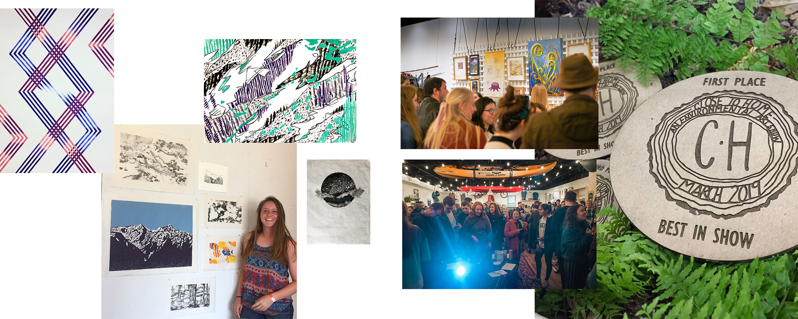
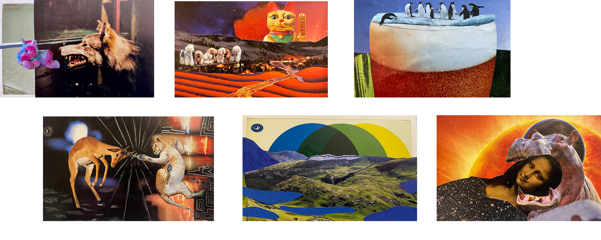

Physical Work
My works on paper cover a wide range of media, see some examples above of ink techniques and collage below. I have also worked in digital animation, documentary cinematography, outdoor sports video and large-scale interactive, installations.
Using grant funding from the Miller Arts Scholars program at the University of Virginia, I created, curated, and organized a month-long community art show which featured 30 pieces of art created by 15 different local artists. I collaborated with a local small business, High Tor Gear Exchange, utilizing their shop space to show. By creating an art show in a non-institutional space and waiving all submission fees, I was able to lower the barrier to entry for both artists and art appreciators. The exhibit connected the arts and outdoors communities of Charlottesville, VA and surrounding areas. By connecting environmental advocates with those inspired by nature, the show facilitated a dialogue of appreciation and conservation for our natural spaces. I directly organized the show for two years, worked with a new set of organizers to pass the torch. The show will see its fifth iteration this coming spring.
